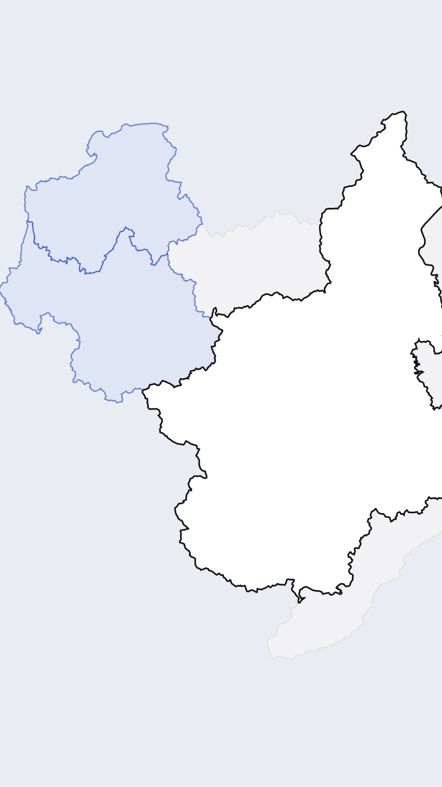

Piémont · automne
Les sagre
la gastronomie
le terroir
le Piémont
Au menu des sagre
100 % piémontais
zzz
Turin · 27 septembre
Terra Madre
Slow Food
le terroir à l'honneur
Torino
Via Roma
refaite
3 octobre
Une vallée occitane
4 octobre
Giaveno
Giaveno
Sagra dei Funghi
Cumiana
le clocher

Saint François de Sales
1567-1622 · patron des journalistes
Château de Bussy-Rabutin · domaine public
introuvable ici
l'art
baroque
baroque

Piémont
Turin
Le week-end dernier
Terra Madre, Turin
Piémont · les vallées
vallées savoyardes
vallées occitanes
Savoie
Turin
Piémont
Turin
Giaveno
entre Giaveno et Pinerolo
Giaveno
Pinerolo
Cumiana
Cumiana · le clocher, démonté
Weekends sagre
Terra Madre et les sagre du Piémont
Turin · Giaveno · Cumiana
Franck Monod
abastou !
dans les villages
en général
pour célébrer
Ce que j'aime
par-dessus tout
c'est trouver
des nouveaux
produits et surtout
de goûter
C'est ça l'important
Et on
y mange uniquement
du territoire
En général
dans le Piémont
on y mange
uniquement
piémontais
On y mange
beaucoup on
y mange
très bien
Moi
je suis quelqu'un
qui fait
des siestes
Le week-end dernier
j'étais à Turin
pour Terra Madre
pour valoriser
le terroir
piémontais
Surtout que c'était
dans via Roma
Ils ont refait
toute la rue
de via Roma
Et ce week-end
dans le Piémont
on a
des vallées savoyardes
bien sûr
on a
des vallées occitanes
Et là j'étais
dans
une vallée occitane
J'étais à Giaveno
c'est un petit
village
Et là
il y avait
justement
la Sagra dei Funghi
pour les champignons
la lasagne avec
Moi je ne
vais pas vous
montrer des plats
je ne suis
pas
un influenceur food
pas encore
Donc
il faut juste
me faire confiance
et me croire
Et là
je me trouve
à Cumiana
entre Giaveno
et Pinerolo
J'adore ce clocher
On retrouve beaucoup
saint François de Sales
c'est un saint
qui est
le saint
patron des journalistes
Mais là non
on ne l'a
pas trouvé
Et aussi surtout
le baroque
les églises
regorgent de l'art
baroque
Et bien
je vous remercie
et à tout
bientôt
Allez abastou
ciao ciao